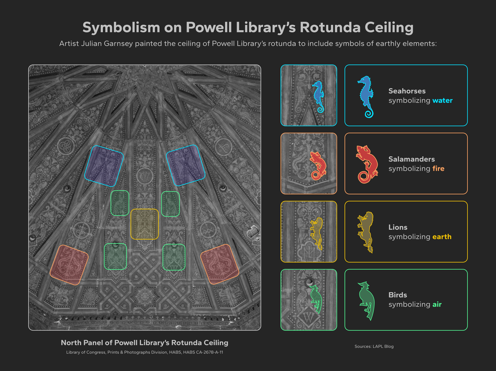
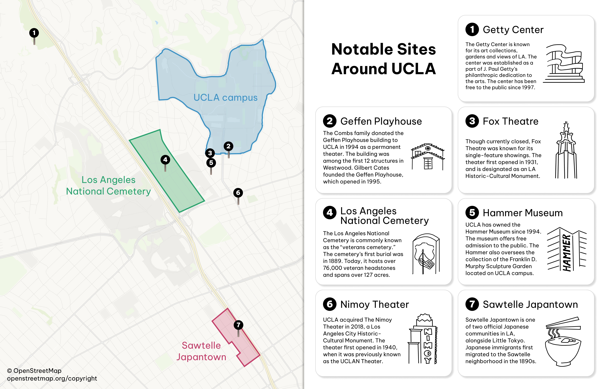
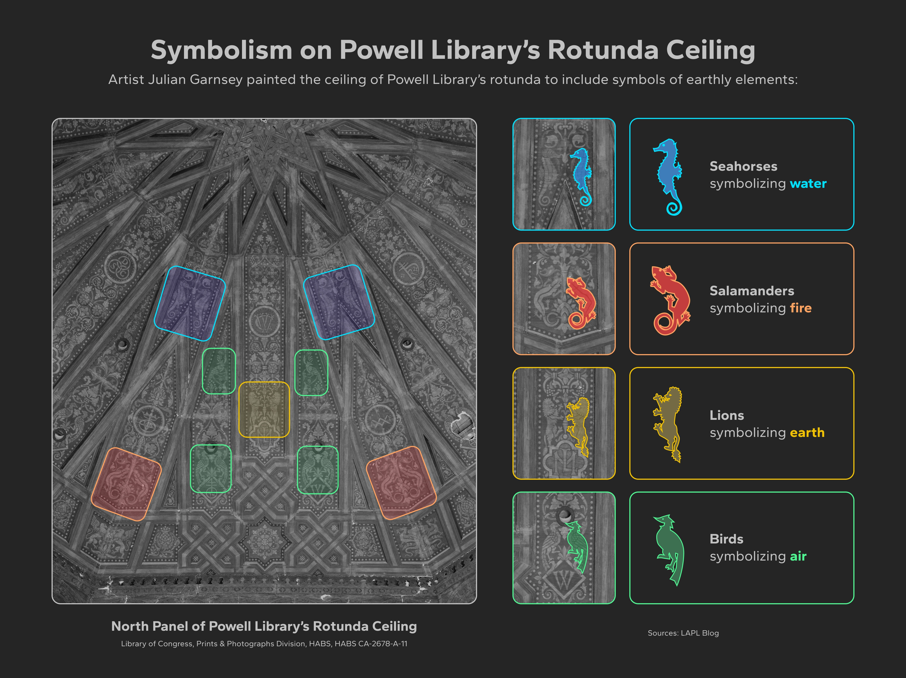
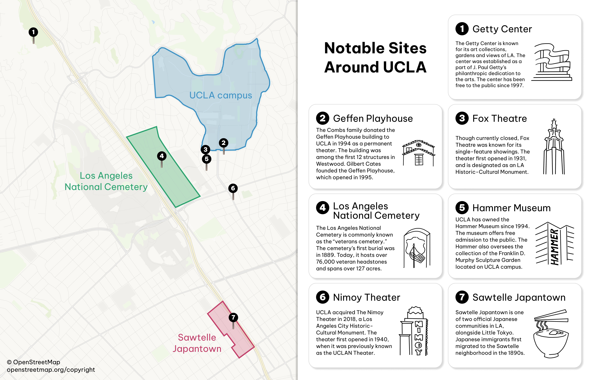

NOAH HRUNG
WEB
•
INFOGRAPHICS
Noah is a designer working in data visualization, interactive design, and infographics.
He studies design, media arts, and statistics at UCLA.
He studies design, media arts, and statistics at UCLA.
WEB
DAILY BRUIN
Beyond the Dining Hall
An interactive, data-driven article analyzing food truck operations and business performance at UCLA
DATA VIZ • DESIGN • DEV • ILLUSTRATION
WEBSITE
Cultural Connections
An interview on cultural identity told through an interactive, carousel-style site
DESIGN • DEV
WEBSITE
LA Waterkeeper
Designing an educational web experience visualizing the LA River
UI/UX • VISUAL DESIGN
INFOGRAPHICS
 


